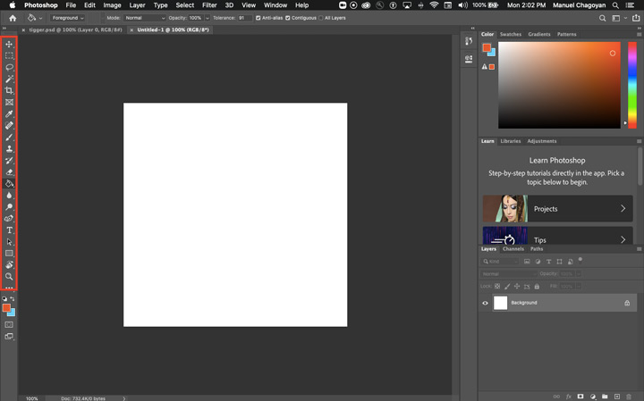
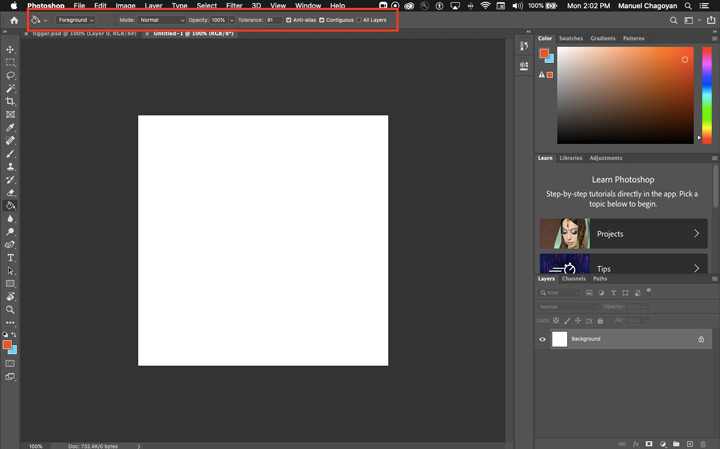
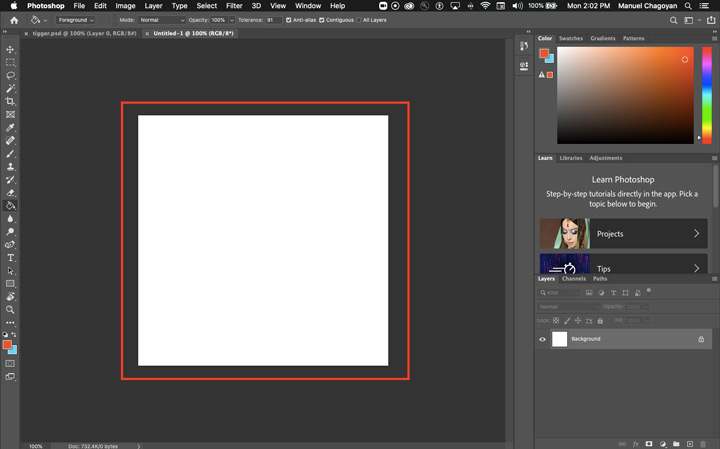

The Photoshop interface can look complex, but if you break it down to the main components, it gets easier to understand. In my opinion, the most important parts of the Photoshop interface include:
At the top of the Photoshop interface, you will find the main menu which includes all options and features available. You will see File, Edit, Image, Layer, Type, etc. It is a typical menu bar similar to most other programs.
For increased efficiency, focus on learning keyboard shortcuts instead of using the main menu.
This is where you find tools like the paint bucket, brush, move, and text. Tools are grouped into similar tools, just click and hold a tool to display related tools.
Again, focus on learning keyboard shortcuts to access available tools.
Directly underneath the main menu, you will find the options bar. The options bar is interesting because it changes depending on the tool you have selected. It allows you to customize tool performance.
As you select various tools, you will notice the changes. Use the options bar to modify tool settings.
The most important part in the Photoshop interface is the canvas. This is where you do all your work. All of your images will be visible here for easy editing.
Everything you place on the canvas will show up in the layers panel. You will often start with a layer named Background, but as you create other elements, you will see layers appear for your new elements.
For example, when you add text, you will see a new layer representing the text. This is the most important panel of all.
Remember, save your images as Photoshop files (.psd) in order to save your layers. Also remember to export your images as .jpg, .png, or .gif in order to use them on your web pages.
Beyond the layers panel, there are many other panels available in Photoshop. These panels help you manage, monitor, and modify images. Examples, include Color, Swatches, Properties, and Character. All of this panels are useful. Please take the time to explore them.